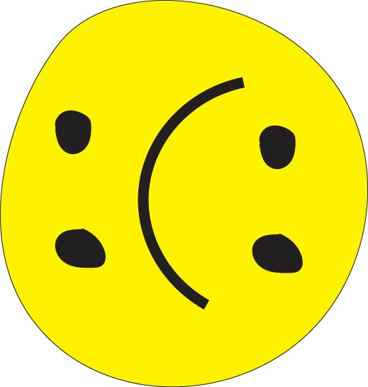
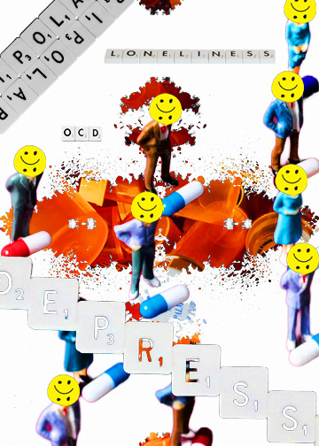

I chose to created an inverse smiley face for my Mental Health photomontage. When I was originally creating the photomontage, I had one of the figures holding a smiley face balloon; the ballon is bright in nature (color), but there is something off. The more I kept looking at the expression, the more I felt like it was masking something; it didn't actually look happy despite smiling.
The design felt like a perfect fit for the theme of this social campaign, and an added layer to the conversation regarding mental health; we mask how we feel when we are taking care of ourselves, or not taking care of ourselves.